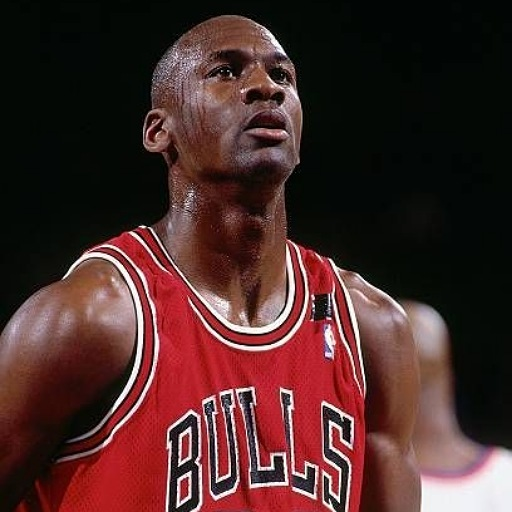
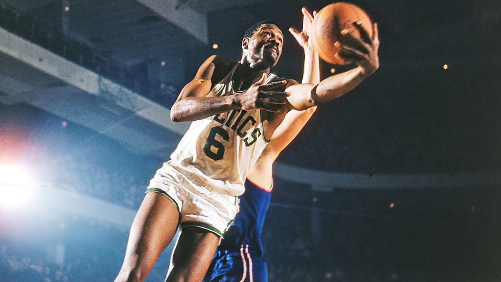
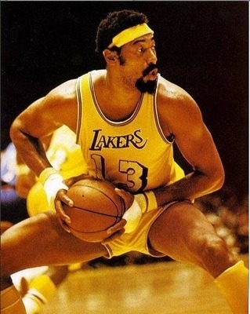
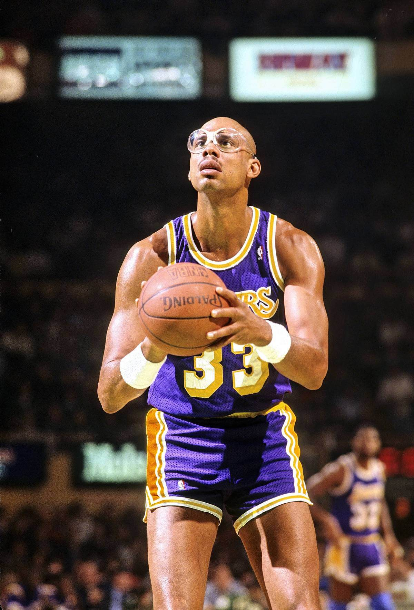
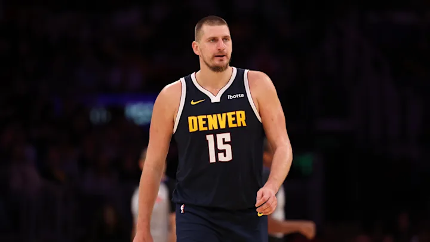
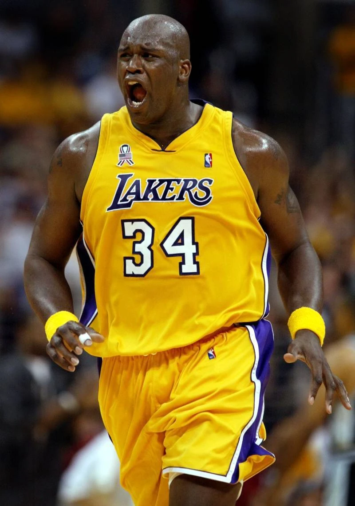

You already knew it was coming. He needs no introduction. 4x champion, 4x MVP, 4x Finals MVP,
All-time NBA Scoring Record.
21x All-star. 6x All-Defense.
3x Olympic Gold Medalist. He’s quite literally done it all. Unlike his Airness, Michael Jordan,
LeBron could REALLY do it all. He has the most points. EVER. Not only that, he is top 5 in
assists all-time, as well as triple-doubles. In the playoffs, he’s 1st in points AND steals, 2nd
in assists, and 4th in rebounding. Most players dream of breaking the top 10 for a single
all-time stat. LeBron is top 5 in everything, with the only exception being rebounds which he is
top-25 all time in as a small forward, while everyone above him is either a power forward or
center. If you really know ball, you can’t deny how extraordinary of a player LeBron really is.
#2: Micheal Jordan

6 Finals. 6 Rings. Undeniable. Michael Jordan was (and arguably still is) the greatest human to ever play the game of basketball. He dominated everywhere on the court, both offensively and defensively. He could snatch-block your shot, run to the other side, slam dunk it while jumping higher than you though humanly possible, taunt you, and immediately get right back on defense, all in front of 20,000 fans every night. Now, one might say “He only scored so much because he was taking 40 shots a night!”, and that’s not a bad argument to make. However, you still have to make the shot to score, and there’s a reason they let Mike take it every time.
#3: Tim Duncan
Oftentimes, “The Big Fundamental” is left out of the casual lunch-table G.O.A.T. debates, and is
even underappreciated at times by more serious fans as well. If you really know ball though, you
know Tim Duncan belongs right here, just below the feud for the title of “goat”. That’s because
Tim was never trying to be the “greatest”, he just wanted to win. So he did. A lot. In fact he
never had a season with less than 50 wins, never missed the playoffs, and has a total win
percentage of 71.9%. He was a generational player that knew his role on the most regimented team
in basketball, and did whatever he needed to do for the team’s success. He wasn’t doing flashy
moves trying to snatch ankles, he just got to the right spot and put the ball in the hoop. If it
ain’t broke, don’t fix it. That’s what got Timmy 5 rings (3 of them in 5 years), 2 MVPs, and 2
Finals MVPs. Tim runnin’, Tim jumpin’, and if Tim got the ball, Tim Duncan.
#4: Kobe Bryant
Kobe Bryant is the greatest player of all time because he combined unmatched skill, competitive fire, and a relentless work ethic that set a standard no one else has reached. His “Mamba Mentality” wasn’t just a slogan — it was a lifestyle that pushed him to outwork everyone, obsess over the smallest details, and continuously evolve his game for 20 seasons. He dominated offensively with one of the most complete scoring arsenals ever — footwork, mid-range, post-moves, three-level scoring, fadeaways, clutch heroics — all while locking down opponents as an elite defender. He won 5 championships, played through injuries most players would sit out, and delivered iconic performances that shaped a generation. More than his stats, Kobe’s legacy is his mentality: he inspired millions of athletes worldwide to push past limits, sacrifice for greatness, and compete with fearless intensity. No player has influenced the culture of basketball — on the court and in everyday life — the way Kobe Bryant has.
#5: Stephen Curry
Stephen Curry is the greatest of all time because he changed basketball more than any player in
history. His shooting range, quick release, and off-ball movement forced the entire league to
evolve, creating a new era of spacing and offense. With four championships, a unanimous MVP, and
the all-time 3-point record, Curry didn’t just dominate — he revolutionized the game, and no one
has impacted modern basketball the way he has.
#6: Bill Russell

Bill Russell is the greatest of all time because he redefined winning in basketball. With 11 championships in 13 seasons, unmatched defense, elite shot-blocking, and leadership that transformed the Celtics into a dynasty, he dominated an era through IQ, teamwork, and clutch performances. Russell didn’t just play the game — he mastered how to win it at the highest level, making his legacy one of pure, undeniable greatness.
#7: Wilt Chamberlain

Wilt Chamberlain is the greatest of all time because he put up numbers and performances that still don’t seem real. From scoring 100 points in a game to averaging 50 points and 25 rebounds for an entire season, Wilt dominated the league physically and statistically in a way no player ever has. He shattered records, forced rule changes, and set standards that remain untouched decades later. Wilt didn’t just play basketball — he rewrote what was possible.
#8: Kareem Abdul Jabbar

Kareem Abdul-Jabbar is the greatest of all time because he combined unstoppable skill with unmatched longevity. His skyhook remains the most unguardable shot in basketball history, helping him become a 6-time MVP (the most ever), a 6-time champion, and the NBA’s all-time leading scorer for nearly 40 years. Kareem dominated across three decades, stayed elite well into his late 30s, and consistently led winning teams through every era he played in. His sustained excellence, consistency, and iconic impact make him one of the most complete and timeless players ever.
#9: Nikola Jokic

Nikola Jokic is the greatest of all time because he’s the most complete and versatile big man the NBA has ever seen. His combination of elite scoring, record-breaking playmaking, dominance in the post, and ability to control the entire game without relying on athleticism makes him truly unique. Jokić reads the floor like a point guard, rebounds like a powerhouse, and scores with effortless efficiency — all while making every teammate better. With multiple MVPs, a Finals MVP, and a style that has redefined the modern center, Jokić’s all-around mastery sets him apart as one of the most unstoppable and impactful players the game has ever seen.
#10: Shaquille O’Neal

Shaquille O’Neal is the greatest of all time because he was the most physically dominant force the NBA has ever seen. At his peak, no one could stop his combination of size, strength, agility, and power — he broke defenses, shattered rims, and controlled entire games in the paint. With four championships, an MVP, three Finals MVPs, and one of the most unstoppable primes in history, Shaq didn’t just beat opponents — he overwhelmed them. His dominance changed how teams drafted, defended, and built rosters, making him one of the most feared and impactful players ever.